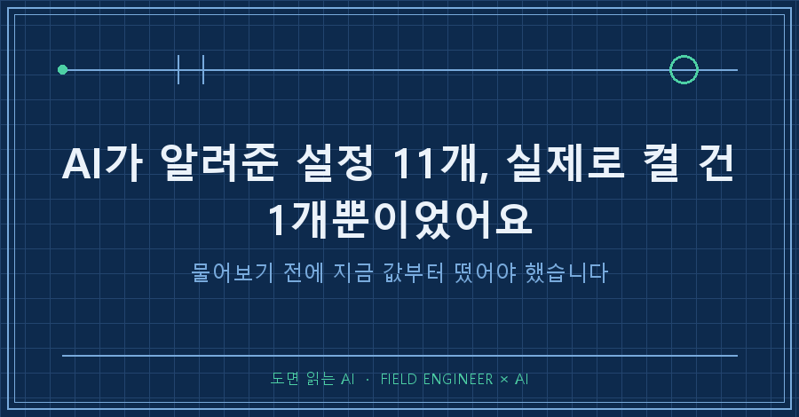
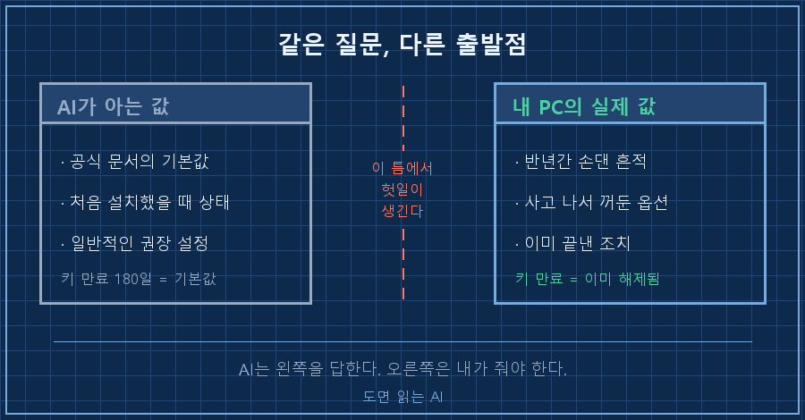
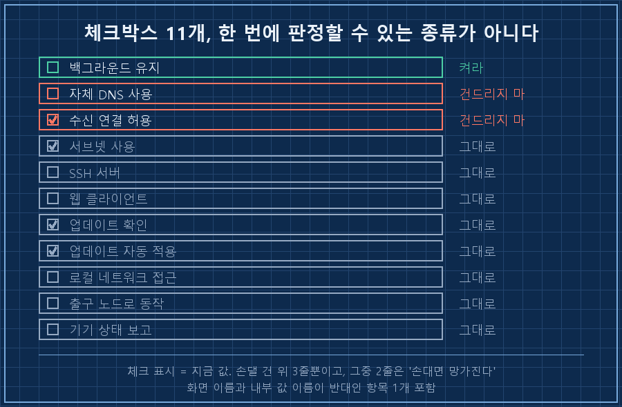
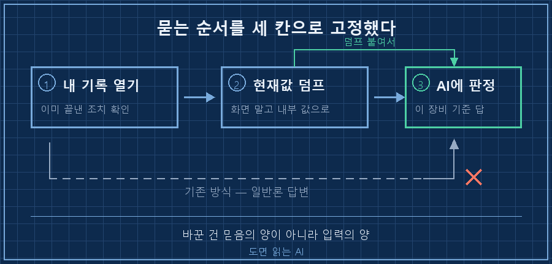

AI가 알려준 설정을 그대로 따라 하다가, 반년 전에 이미 끝낸 일을 또 할 뻔했습니다.
원격접속 도구 설정 창을 열었더니 체크박스가 열한 개 있었어요. 반은 켜져 있고 반은 꺼져 있는데, 뭐가 켜져 있어야 정상인지 모르겠더라고요.
그래서 AI한테 물었습니다. "이거 다 체크하는 게 맞아?"
첫 답이 이렇게 왔어요.
노드 인증키는 기본 180일이 지나면 만료됩니다.
관리자 콘솔에서 키 만료를 꺼두시는 걸 권합니다.틀린 말이 아닙니다. 그런데 제 PC는 반년 전에 이미 꺼둔 상태였어요. 심지어 그 사실이 제 작업 기록 309번째 줄에 한 줄로 적혀 있었고요.
AI가 알려준 설정이 내 환경과 어긋나는 건, AI가 틀려서가 아니라 '문서에 적힌 기본값'을 답하기 때문입니다. 내 장비의 지금 값은 물어본 적도 없고, 알 방법도 없거든요.
그래서 순서를 바꿨습니다. 켤까 말까를 묻기 전에 지금 값이 뭔지부터 덤프했어요. 그 한 단계 때문에 결론이 완전히 달라졌습니다. 열한 개 중 켤 건 하나, 건드리면 망가지는 게 둘이었거든요.
2026년 9월 기준이고, 윈도우 PC를 밖에서 원격으로 붙여 쓰는 환경입니다. 회사 일이 아니라 제 개인 PC 얘기예요.

"다 체크하면 되나요"가 왜 틀린 질문인가요
체크박스는 켜고 끄는 스위치가 아니라, 각자 다른 걸 건드리는 손잡이라서 그렇습니다. 한꺼번에 판정할 수 있는 종류가 아니에요.
값부터 떴습니다. 설정 화면을 눈으로 보는 대신 명령 한 줄로 현재값을 통째로 뽑았어요.
{
"RouteAll": true,
"CorpDNS": false,
"RunSSH": false,
"RunWebClient": false,
"WantRunning": true,
"ShieldsUp": false,
"ForceDaemon": true,
"AutoUpdate": { "Check": true, "Apply": true },
"PostureChecking": false
}화면의 체크박스 이름과 실제 내부 키 이름이 다른 것부터 눈에 들어왔어요. 화면에는 "수신 연결 허용"이라고 쓰여 있는데 내부 값은 ShieldsUp, 즉 방패를 올린다는 반대 의미의 이름입니다. 체크를 끄면 방패가 올라가는 구조예요. 화면만 보고 판단하면 여기서 한 번 뒤집힙니다.
열한 개를 하나씩 붙여봤더니 이렇게 갈렸습니다.
| 판정 | 개수 | 내용 |
|---|---|---|
| 켜라 | 1 | 로그아웃·재부팅 후에도 백그라운드 유지 |
| 절대 켜지 마라 | 1 | 자체 DNS 사용 (hosts 파일을 건드림) |
| 반드시 이대로 둬라 | 1 | 수신 연결 허용 (끄면 원격 접속 차단) |
| 지금 값 유지 | 8 | 서버 기능·업데이트·기업용 항목 등 |
열한 개 중 여덟 개는 애초에 손댈 이유가 없었어요. 그런데 "다 체크할까요?"라고 물었으면 그 여덟 개까지 같이 뒤집혔을 겁니다.
건드리면 확실히 망가지는 두 개가 있었어요
하나는 백신과 싸우게 되고, 하나는 원격 접속 자체를 끊습니다.
자체 DNS 옵션을 켜면 이 도구가 윈도우의 hosts 파일에 기기 목록을 직접 써넣어요. 문제는 백신 입장에서 hosts 변조가 파밍 공격의 전형적인 신호라는 겁니다. 정상 동작인데 공격으로 잡히니까 부팅할 때마다 복원 팝업이 떴어요. 이걸 며칠 헤매다 원인을 잡은 게 지난주 일이고, 해결은 이 옵션을 끄는 것이었습니다.
두 번째가 더 치명적이에요. "수신 연결 허용"을 끄면 원격 데스크톱 접속이 통째로 막힙니다. 원격으로 들어가서 원격 접속을 차단하는 셈이라, 끄는 순간 되돌릴 방법이 없어요. 집에 가서 직접 켜야 합니다.
[다 체크했을 때 벌어질 일]
자체 DNS 켬 → 부팅마다 백신 팝업 부활
수신 연결 차단 → 원격 접속 끊김, 복구는 현장에서만
서버 기능 켬 → 안 쓰는 포트가 열림이 세 줄이 "권장 설정 다 켜기"의 실제 결과입니다. AI가 알려준 설정을 일괄 적용하는 게 왜 위험한지가 여기 다 들어 있어요.

AI가 이미 끝난 일을 다시 시킨 이유
AI는 일반 기본값을 알고, 내 장비의 현재값은 모릅니다. 이 둘의 차이가 그대로 헛수고가 돼요.
키 만료 얘기가 딱 그랬습니다. 공식 문서 기준 기본 180일이 맞고, 처음 붙인 기기는 그 상태가 맞습니다. 그런데 제 기기들은 반년 전에 제가 직접 해제해뒀어요. 기록에는 이렇게 한 줄만 남아 있었습니다.
- 키 만료 비활성화 완료 — PC·노트북·맥북이 한 줄을 안 읽었기 때문에, 저는 하마터면 관리자 콘솔에 들어가서 이미 끝난 작업을 다시 할 뻔했어요. 실제 피해는 없었습니다. 날아간 건 시간뿐이고요. 그런데 이런 게 쌓이면 "끝낸 일을 계속 다시 여는" 상태가 됩니다.
저는 설비 쪽에서 제어 일을 15년 했어요. 현장 나가서 제일 먼저 하는 게 그 설비의 현재 설정값을 통째로 뽑는 일입니다. 도면에 적힌 값이랑 실제 장비에 들어가 있는 값이 다른 게 워낙 흔해서요. 커미셔닝 때 누가 바꿔놓고 도면에 반영을 안 했거나, 현장에서 한 번 손본 뒤 그대로 간 거죠. 그래서 도면보다 장비 화면을 먼저 믿습니다.
그 습관을 제 PC한테는 안 썼더라고요.. 도면 대신 공식 문서, 장비 화면 대신 AI 답변을 먼저 본 셈이었습니다.
여러분도 AI가 알려준 설정을 그대로 적용해본 적 있으신가요? 저는 이번에 "내 환경에서 이미 다른 값이 들어가 있을 가능성"을 아예 계산에 안 넣고 있었어요.
그래서 묻는 순서를 세 칸으로 고정했습니다
| 순서 | 할 일 | 하는 이유 |
|---|---|---|
| 1 | 그 주제로 내가 남긴 기록부터 연다 | 이미 끝낸 조치가 있는지 확인 |
| 2 | 장비의 현재값을 명령으로 덤프한다 | 화면 표기보다 내부 값이 정확 |
| 3 | 그 값을 붙여서 AI에게 판정을 시킨다 | 일반론이 아니라 이 장비 기준 답 |
질문 문장이 이렇게 바뀝니다.
[전] 이 설정 다 체크하는 게 맞아?
[후] 이게 이 PC의 현재값이야. (덤프 붙임)
이 중에 바꿔야 할 항목만 골라주고,
각 항목이 안 바뀌면 뭐가 안 되는지도 같이 적어줘.이 중에라는 말 한마디가 차이를 만들어요. 앞 문장은 일반 기본값을 부르는 질문이고, 뒤 문장은 내 값을 부르는 질문입니다. 같은 AI가 답하는데 결과물이 다릅니다.
덤으로 하나 더 건졌어요. 기록을 읽고 나서야 자체 DNS 옵션을 왜 꺼뒀는지(백신 팝업)를 알았고, 그 덕에 "켜면 편하다"고 잘못 권하는 걸 막았습니다. 기록을 안 읽었으면 편의 기준으로 잘못 판정했을 자리였어요.

바꾼 게 실제로 먹었는지 확인하는 법
켠 다음이 중요해요. 화면의 체크 표시는 "눌렀다"까지만 알려주지, 적용됐는지는 안 알려줍니다.
저는 같은 명령으로 값을 다시 떠서 봤습니다. 켜기 전에는 목록에 없던 키가 켠 뒤에 나타나더라고요.
[켜기 전] ForceDaemon 항목 없음
[켠 뒤] "ForceDaemon": true이 한 줄이 뜨면 끝입니다. GUI를 다시 열어볼 필요가 없어요!
그리고 되돌리는 방법을 같이 적어뒀습니다. 이 옵션은 명령 한 줄로 켜고 끌 수 있어서, 문제가 생기면 원위치가 되는 항목이에요. 반대로 위에서 말한 "수신 연결 허용"은 원격에서 끄면 원격으로는 못 되돌립니다. 되돌릴 수 있는 항목과 없는 항목을 나눠두는 것만으로도 겁이 덜 나더라고요.
미리 답해두는 질문 둘
Q. 그냥 AI 답변을 안 믿으면 되는 거 아닌가요?
반대예요. 저는 이번에도 AI한테 열한 개 판정을 다 시켰고, 근거까지 받았습니다. 바꾼 건 믿음의 양이 아니라 입력의 양입니다. 현재값을 안 주면 일반 기본값으로 답할 수밖에 없고, 주면 제 장비 기준으로 답해요. 답이 나쁜 게 아니라 질문이 비어 있었던 거죠.
Q. 설정값 덤프는 도구마다 방법이 다르지 않나요?
다릅니다. 다만 요즘 도구는 GUI가 있으면 거의 CLI도 같이 있어서, "현재 설정 전체를 텍스트로 뽑는 명령"이 대체로 존재해요. 그게 없으면 설정 파일 위치를 찾습니다. 저는 도구를 새로 붙일 때 이 명령부터 찾아두고 메모에 적어둡니다. 나중에 급할 때 찾으면 늦더라고요.
이번에 남은 건 설정값 열한 개가 아니라 순서 하나였어요. 기록 → 현재값 → 질문. 이 순서를 지키면 AI가 알려준 설정이 내 환경에서 어긋나는 일이 확 줄어듭니다!
이런 식으로 "왜 이 값을 이렇게 뒀는지"는 makefield.ai 한쪽에 설정값이랑 같이 붙여놓는 중입니다. 값만 적어두면 반년 뒤에 제가 또 뒤집어놓더라고요..
다음 편은 되돌릴 수 있는 설정과 없는 설정을 갈라놓는 기준 얘기로 가볼게요. 지금 쓰시는 도구에서 현재 설정값을 통째로 뽑는 명령, 혹시 알고 계신가요?
태그: #AI가알려준설정 #AI답변검증 #원격접속설정 #원격데스크톱 #설정값확인 #AI일반론답변 #PC원격관리 #윈도우원격접속 #자동화PC관리 #AI에게일시키기 #AI프롬프트 #개인AI에이전트 #AI자동화구축 #현장엔지니어AI #도면읽는AI